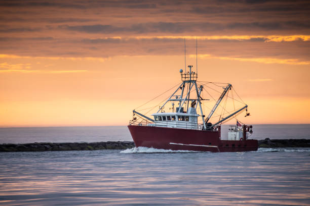

13. Oct, 2025
Pêcher autrement :
nouvel article
Pêcher autrement :
l’avenir durable
nouvel article
Présentation d’initiatives locales et de techniques modernes qui cherchent à concilier pêche commerciale, protection de la biodiversité et traditions maritimes...
Lire plus